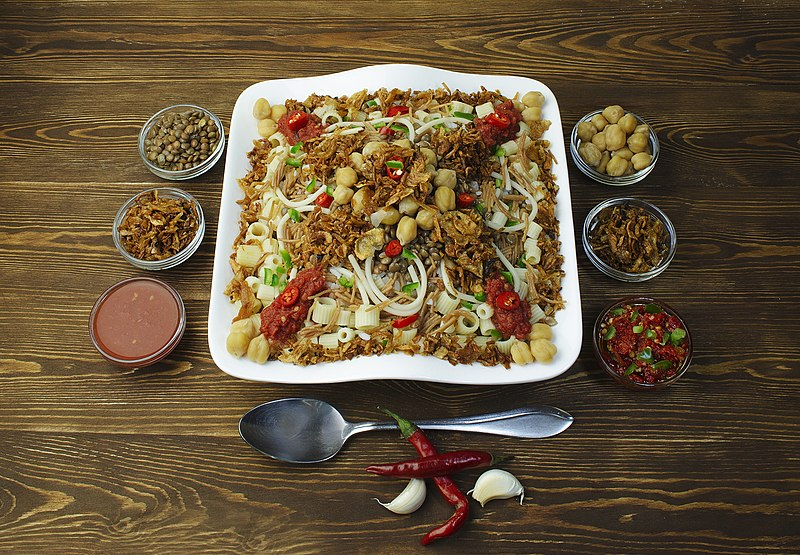

Koshary
A remarkable mix of flavors brought together by the Egyptian cuisine.

Description
Koshary is considered one of the most delicious Egyptian dishes. it is the only dish i could eat 4 of in one sitting and still wish my stomach had more space.
Koshary is a mixture of different cheap ingredients. it combines ingredients used by the common people to deliver a blast of flavors.
originally koshary was a poor man's food. some people might find it not appealing, or that it contains too much unrelated ingredients, but they would be wrong. what the dish lacks in apperance and class, it makes for in flavor. so i urge you to try it at least once, just make sure you don't get hooked to it as i am!
Ingredients
For koshary you don't need alot of money, but you do need alot of ingredients. koshary is usually made in large portions to feed multiple people, and can stay tasty in the fridge for multiple days. So bring in your biggest pots alongside these ingredients:
Fried onions
- Onions, sliced thin into rings
- Salt
- Cornstarch
- Vegetable oil
Tomato sauce
- Fried onions
- Reserved vegetable oil
- Garlic cloves
- Tomato paste
- Tomato sauce
- Water
- Salt and Pepper
- White vinegar
- Paprika
Lentil rice
- Reserved oil
- Fried onions
- Brown lentils, rinsed and drained
- Rice, rinsed and drained
- Vermicelli, toasted
- Water
- Ground cumin
Dukka / Cumin Sauce
- White vinegar
- Garlic, crushed
- Hot water
- Ground cumin
- Salt, to taste
- Ground black pepper
- Paprika
Pasta
- Ditalini pasta
- Water
- Salt
Chickpeas
- Chickpeas rinsed and drained
- Tomato
- Lemon
- Cumin
- Water
How To Make Koshari
The beauty of koshary is that it has no correct sequence, you have to make a pot for each part, and then combine them together in a bowl at the end. so let's discuss how to make each part.
Make The Chickpeas
- Boil the chickpeas with cumin while preparing the fried onions. add sliced tomato for flavor.
- Once the chickpeas are tender, add a squeeze of lime on top.
Make The Fried onions
- Chop the onions into thin circles. Allow the onions tossed in flour to rest for 30 minutes prior to frying.
- Sunflower oil yields the most crispy fried onions. Fry the onions in oil until golden brown, then put them on a paper towel lined plate.
Make The Koshari Lentil Rice
- Prepare the koshari lentil rice by blending the peeled onion in the food processor.
- Add some oil to a high-rimmed pot and fry the blended onions for about 10 minutes on medium-low heat.
- Add the soaked brown lentils and water to the cooked onions. Bring to a boil for 10 minutes, or until the lentils are soft.
- Turn down the heat to medium-low and add the rice and more water. Add salt and pepper and mix the rice. Cover and cook for about 12 to 15 minutes, or until the rice is steamed. Remove from the heat and keep the rice covered.
Make Tomato red vinegar sauce
- Blend the tomatoes in a blender. Pour the pureed tomatoes into a strainer.
- Use a spoon to press the blended tomatoes through the strainer.
- In a medium saucepan on high heat, add some oil and fry the red pepper flakes (or cayenne pepper) and minced garlic for about 1 minute. Add the tomato paste and white vinegar for about 30 seconds.
- Add the strained tomatoes. Stir in the ground cumin, ground coriander, salt, sugar, and ground pepper.
- Boil on medium-high heat for about 10 minutes. Add a chili pepper if desired.
Make pasta
- Boil water, make sure to salt it
- once boiling, add the pasta and wait until it is cooked. keep tasting it, tasting is the best way to make sure pasta is cooked.
- Once cooked, drain it, and add some oil to it and mix them together.
Make dokka
- Make the fresh red sauce. Add the bell pepper, tomatoes, onion, garlic cloves, ground cumin, ground coriander, salt, pepper, lime juice, and some oil from the fried onions in a food processor.
- Blend on high. Set aside.
Assemble the Perfect Koshari Bowl
Because koshari has several parts to it, you might be wondering how to assemble everything. I made the list in order of how you assemble the bowl starting with the bottom-most layer (being the koshari lentil rice).
- Koshari lentil rice
- Pasta
- Cumin chickpeas
- Traditional koshari tomato sauce with vinegar
- Fresh red sauce (optional)
- Crispy fried onions
Tips and Variations
- If using long-grain rice, add a cup more water. Long-grain rice requires more water than short-grain rice.
- If you want to lighten this recipe up, use whole wheat pasta and reduce the amount of oil used for the koshari rice.
- Use the oil from the fried onions in other parts of this recipe. This is a tip I've heard from 2 sources to make the most flavorful koshari.
- The secret to an amazing bowl of koshari is the right portions of each layer. Personally, I go overboard with the fresh red sauce and fried onions. But, experiment for yourself with what you prefer.
Go back